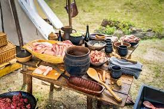
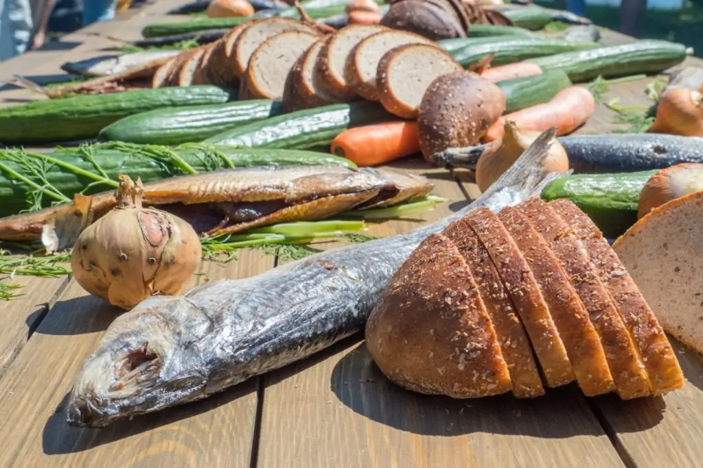

VIKINGS FOOD
Viking food consisted mainly of what they could farm, hunt, and gather. They ate grains like barley, rye, and oats to make bread or porridge, and raised livestock such as cattle, sheep, and pigs for meat, milk, and cheese. They also hunted wild game, fished, and gathered berries and nuts. Meals often included stews made from meat and vegetables like cabbage, onions, and beans. Fermented foods like dried fish and preserved meat helped them store food for the winter months, and they drank ale or mead, a honey-based alcoholic drink.
Vikings enjoyed a diet rich in fresh food, primarily sourced from their surroundings. They fished in rivers and coastal waters, catching fish like herring, salmon, and cod, which were often eaten fresh or dried for preservation. They also gathered shellfish, such as mussels and crabs. Fresh vegetables and herbs, like onions, leeks, and wild greens, were commonly used in their meals. The combination of fishing, foraging, and farming allowed Vikings to have a varied diet, making the most of the resources available to them.
For more info, visit Example Site.